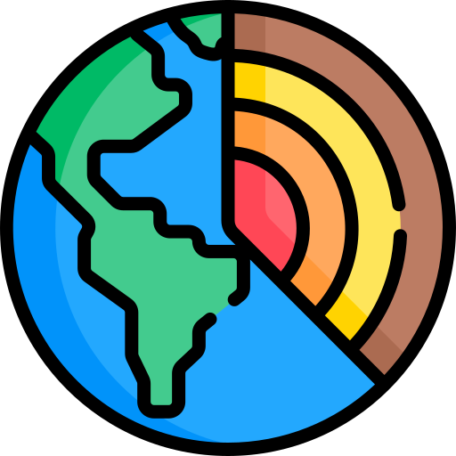

แบบฝึกหัดเตรียมความพร้อม สอวน.
วิชาดาราศาสตร์
และ
วิชาวิทยาศาสตร์โลกและอวกาศ
ทบทวน (Review)
กำลังโหลดแบบทดสอบ...
ดาราศาสตร์ (Astronomy)
กำลังโหลดแบบทดสอบ...
วิทยาศาสตร์โลกและอวกาศ (Earth & Space Science)
กำลังโหลดแบบทดสอบ...
สุ่มแบบทดสอบ